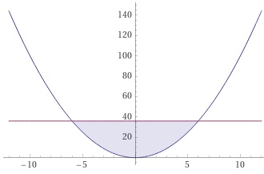
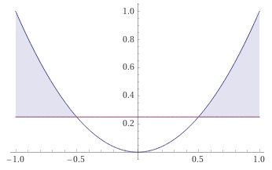

Aufgabe 35 Bestimmen Sie die Lösungsmengen der Ungleichungen für x ∈ ℝ: a) x² < 36 b) x² > 0,25 c) x² < - 2 a) x² < 36 |ⱱ |x| < 6 Fallunterscheidung: 1. Fall |x| = x für x ≥ 0 x < 6 L1 = x ≥ 0 ∩ x < 6 = 0 ≤ x < 6 2. Fall |x| = -x für x < 0 -x < 6 |*(-1) x > -6 L1 = x < 0 ∩ x > -6 = -6 < x < 0 L = L1 ∪ L2 = 0 ≤ x < 6 ∪ -6 < x < 0 L = -6 < x < 6  b) x² > 0,25 |ⱱ |x| > 0,5 Fallunterscheidung: 1. Fall |x| = x für x ≥ 0 x > 0,5 L1 = x ≥ 0 ∩ x > 0,5 = x > 0,5 2. Fall |x| = -x für x < 0 - x > 0,5 |*(-1) x < - 0,5 L1 = x < 0 ∩ x < - 0,5 = x < -0,5 L = L1 ∪ L2 = x > 0,5 ∪ x < -0,5 L = x > 0,5 ∪ x < -0,5  c) x² < -2 x² ist positiv für alle x --> x² > 0 --> L = ∅